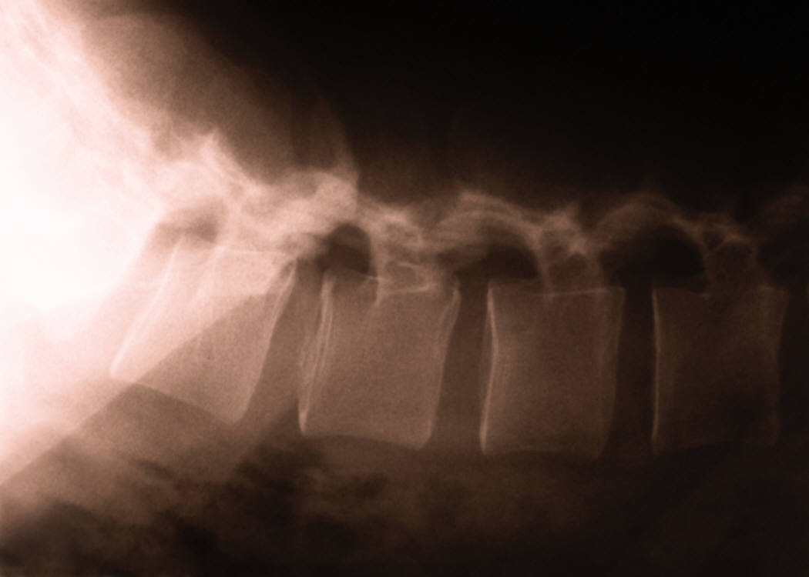

Reactivating Nerves
Functional Electrical Stimulation for Spinal Cord Injuries
Jesse Manek
Spring 2011

We have weak spines. Our spinal cord evolved to be on our dorsal
side because it is such a vulnerable structure. Its main function
is to send commands to the rest of the body and sensory signals to the
brain via nerve cells. Any damage to our spines can severely
impede the transmission of these signals, leaving people paralyzed or
debilitated. Dr. Milos R. Popovic, the lead author for a paper
recently published in the journal of Neurorehabilitation and Neural
Repair, is using Functional Electrical Stimulation (FES) therapy to
treat these injuries. Current treatment for spinal cord injury
focuses mainly on occupational therapy. This in an umbrella term
for physical therapy treatments used to help overcome injuries.
While this type of therapy is very effective for injuries that the body
can repair (e.g. a sprained ankle or stretched tendon), it can do
little to reactivate nerves.
FES is a method that uses electrical
currents to excite paralyzed neurons. The study done by Popovic
and his team used a randomized trial of 24 rehabilitation inpatients
that were unable to perform most motor functions with their hands
because of spinal cord injuries. Five days a week the patients
would receive FES treatment over a period of eight months.
Electrodes were placed onto the spine to transmit an electrical
current. The goal is to activate paralyzed nerve cells.
Nine patients were treated with FES for an hour, and another group of
12 patients received an additional hour of conventional occupational
therapy. The results of the study showed that FES treatment
provided a significant increase in voluntary grasping and other motor
functions in the hand. Occupational therapy, on the other hand,
only led to a moderate improvement in motor function.
Popovic’s team is beginning to develop a
FES prototype for use in hospitals in the next year. This method
of treatment could bring relief to countless people who cannot take
care of themselves due to spinal injuries. As the FES treatment
becomes more effective, greater levels of paralysis can be treated, and
quality of life for spinal injury victims will be improved.